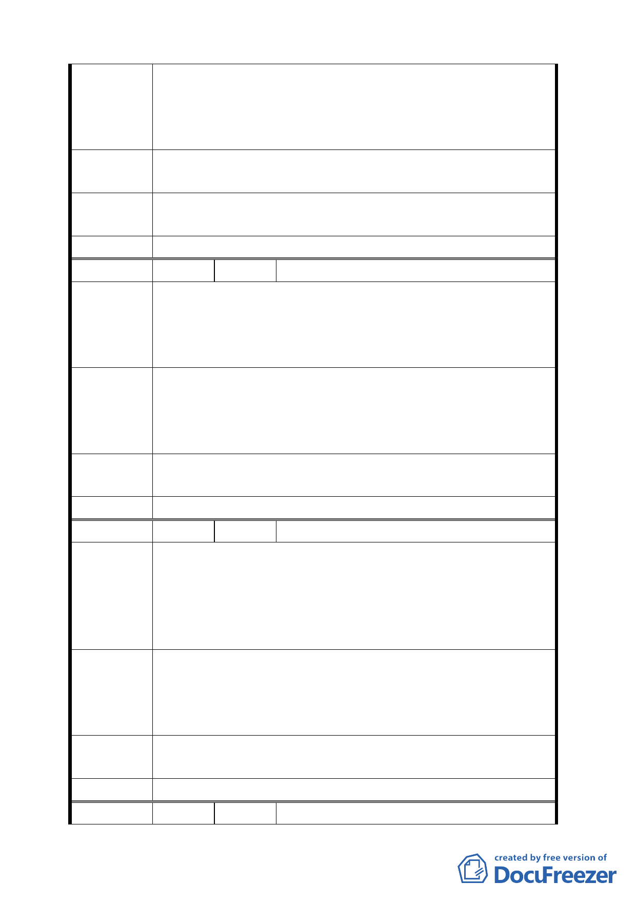

法償還銀行貸款亦是結束營業一途。
五、事關本公司存亡，盼政府應慎重並妥善處理以免因政府
的政策失誤，至使人民財產遭受鉅大損失致對政府失去
信心。
建議辦法
反對將本公司所有座落於台北市北投區桃源段二小段 162-1
地號等 15 筆土地變更為保護區。
專 案 小 組 同編號 1。
審查結論
委員會決議 同編號 1。
編 號 6 陳情人 魏大凌（住二十三）
一、土地標示:士林區翠山段二小段 12.16 等地號。
陳情理由
二、本次通盤檢討應將民眾的權益為優先並著重公平原則非
從純理論出發逕行將本區域土地分為四大類出發點即有
爭議置民眾權益不顧亦欠缺公平性。
本次通盤檢討可否將 23 處保護區為住宅區以類似區段徵收
建 議 辦 法 方式將不可開發區統一劃設,扣除必要性公共設施將可建地
按比率發還土地所有權人以兼顧政府嚴格管制山坡地之政策
及民眾權益且較具公平性。
專案小組
審查結論
同編號 1。
委員會決議 同編號 1。
編 號 7 陳情人 林碧華（住二十三）
一、土地標示: 士林區翠山段二小段 18 地號。
二、列為第一類不適宜開發地區中‚亦有部份較為平坦可開發
陳情理由
之土地,若將本區內全部變更為保護區,則對原本為住宅
區且地形坡度無虞,可開發之土地所有權人受到影響,難
免有失公平。
針對本次通盤檢討計劃面積高達 460 多公頃,若只以劃分為
四大類區域作為全部評估後之定案,不免草率,故理應在仍編
建 議 辦 法 定為住宅區之架構下,針對各土地狀況提出細部規劃制定特
別管理規則。
專案小組
審查結論
同編號 1。
委員會決議 同編號 1。
編 號 8 陳情人 林碧玉（住二十三）
九